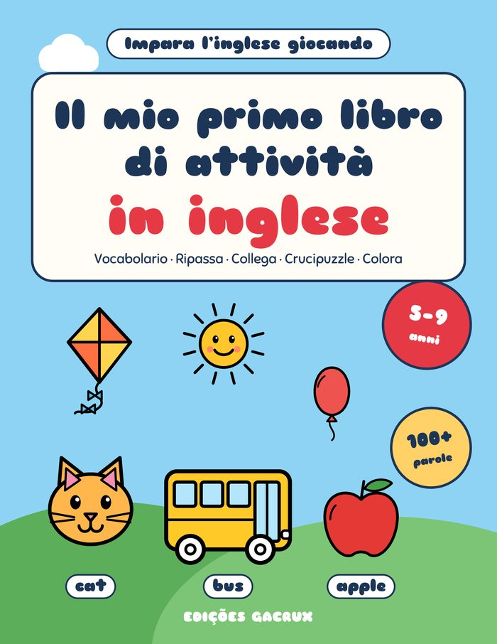
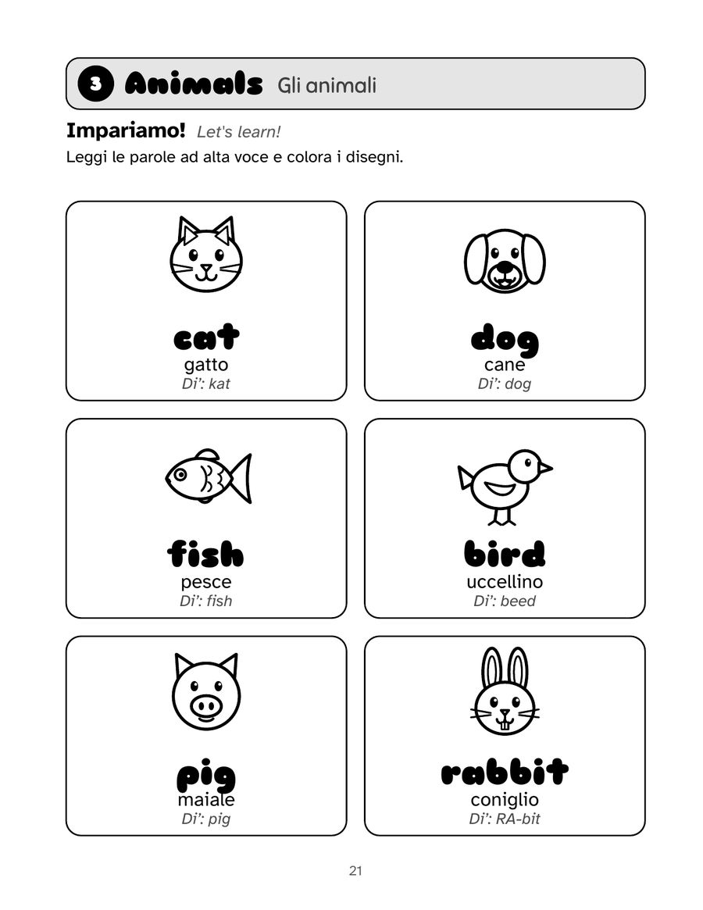
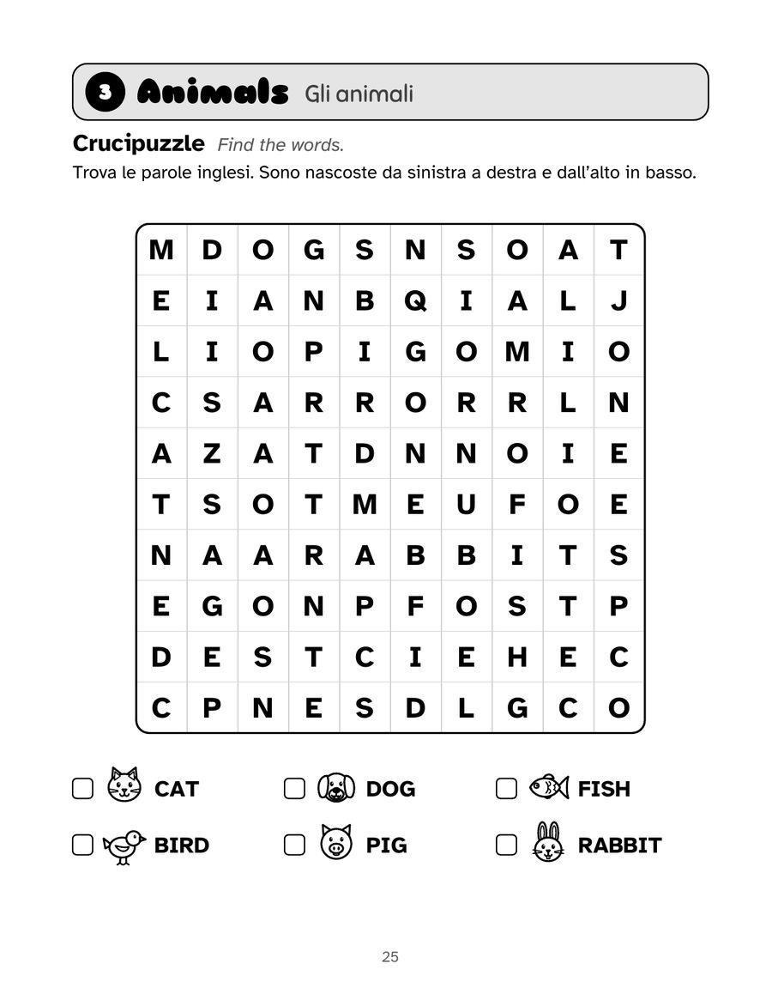
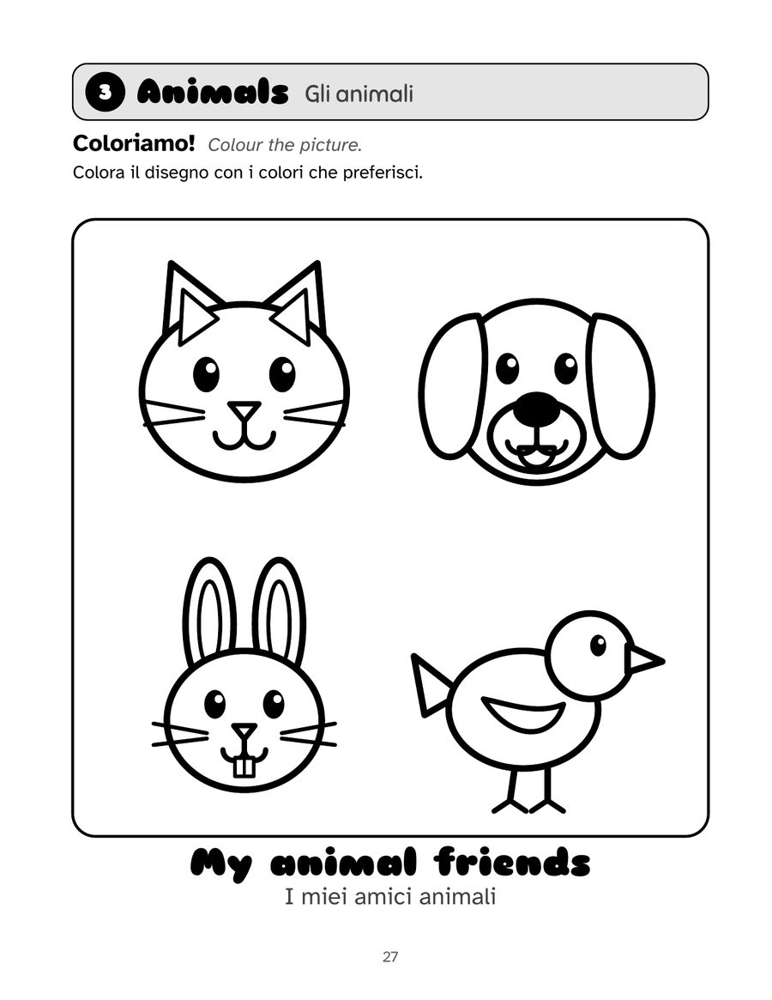

Italiano
Il mio primo libro di attività in inglese
L’inglese per bambini dai 5 ai 9 anni
Un libro bilingue italiano-inglese per iniziare l’inglese giocando: oltre 100 parole (inglese britannico) in 15 temi di tutti i giorni, con disegni da colorare e giochi brevi. Non serve sapere l’inglese per aiutare.
PDF di 4 pagine del libro, pronto da stampare. Estratti gratuiti per uso personale e in classe.
118 pagine · 21,6 × 27,9 cm · copertina flessibile · Edições Gacrux
Cosa c’è nel libro
- Ogni parola in inglese e in italiano, con aiuto di pronuncia
- Parole da ripassare e poi da scrivere senza aiuto
- Collega, crucipuzzle e lettere in disordine in ogni tema
- 15 grandi disegni da colorare
- Una pagina di consigli per i genitori
- Soluzioni alla fine e un diploma per il bambino
Guarda dentro il libro
Tocca una pagina per ingrandirla.





